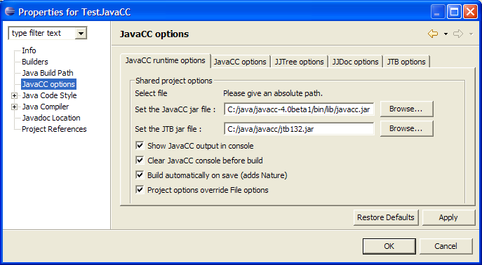
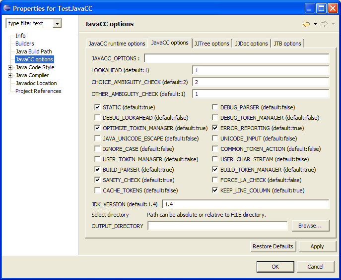
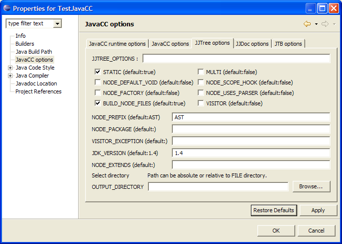
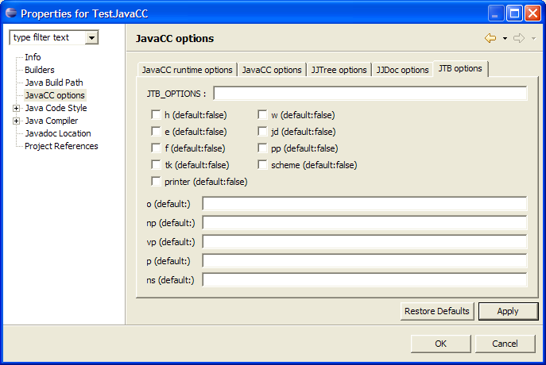
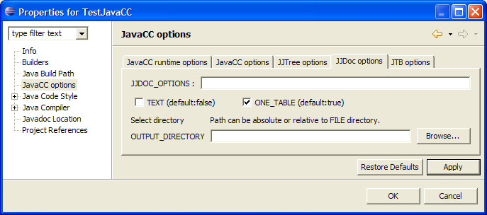

You can set properties for the whole project, select the
projet right clic -> properties.
Or you can set properties for each file (deselect "Project
options override File options") and select the fileright clic -> properties.
This is designed to handle options like -OUTPUT_FILE which can
only be set for a single file.
Runtime options

When you check "Build automatically before save"
a nature and a builder will be added when you clic OK.
Note that automatic compilation is only effective if you check
the menu "Project" -> "Build automatically".
The Checkbox "Project options override file options"
forces the options to be the same for all files.
Uncheck this if you want to use a per file options setting.
You can leave "JTB jar" blank if you don't use JTB.
JavaCC options

All these options are described in the javacc documents.
Note that the first line "JAVACC_OPTIONS" recalls the
options passed to javacc.
You can type in this line or check the boxes, but do not type a
wrong option (like -MY_OPTION=foo) it will be ignored.
It is sometimes useful to "DEBUG_PARSER" or to "DEBUG_LOOKAHEAD"
just the time to correct an error.
When doing that, you can do it for one file only, setting the
properties per file.
JJTree options

All these options are described in the javacc documentation.
JTB options

All these options are described in the jtb documentation.
Here is a reminder :
-h Displays a help message including a table with brief descriptions of
these options.
-o NAME Specifies the filename JTB should use to output the annotated
grammar rather than use the default jtb.out.jj.
-np NAME Specifies the directory and package JTB should place the
generated syntax tree classes rather than use the default syntaxtree.
Note: for nested packages, JTB assumes the current directory is the one
directly above the package stated. For example, if you used
"-np=foo.bar.bletch", JTB will assume you are in the directory foo/bar
and will generate a directory called bletch to store the node classes.
-vp NAME Specifies the directory and package JTB should place the
generated visitor classes rather than use the default visitor. The
above note for the -np otion applies to this option as well.
-p NAME Shorthand for "-np NAME.syntaxtree -vp NAME.visitor".
-si Reads input from standard input (typically the keyboard) rather
than an input grammar file.
-w JTB will no longer overwrite existing files.
-e Supresses JTB semantic error checking.
-jd Generates JavaDoc-friendly comments in generated visitors and
syntax tree classes.
-f Generates descrpitive node class child field names such as
whileStatement and nodeToken2 rather than f0, f1, etc.
-ns NAME Specifies the name of the class (e.g. mypackage.MyClass) that
all node classes should subclass. This class must be supplied by the
user.
-pp Generates parent pointers in all node classes as well as
getParent() and setParent() methods. The parent reference of a given
node will automatically be set when the node is passed to the
constructor of another node. The root node's parent will be null.
-tk Stores special tokens into the parse tree.
-r Generate ObjectDepthFirst with alternative return channels.
JJDoc options

There is a bug in JJDOC : the option "-OUTPUT_DIRECTORY"
is not taken by JJDoc.
Workaround : you can use the -OUTPUT_FILE option setting the
directory with the file.
Drawback : you have to do that for each file.
Note that the option -OUTPUT_FILE doesn't show up when you set
the properties for the project.
It would be of no use to generate doc for all the grammar files
in the same html file.